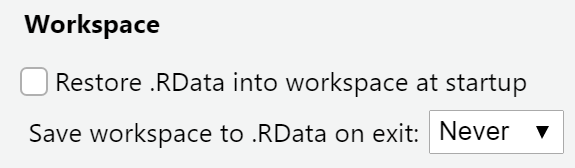
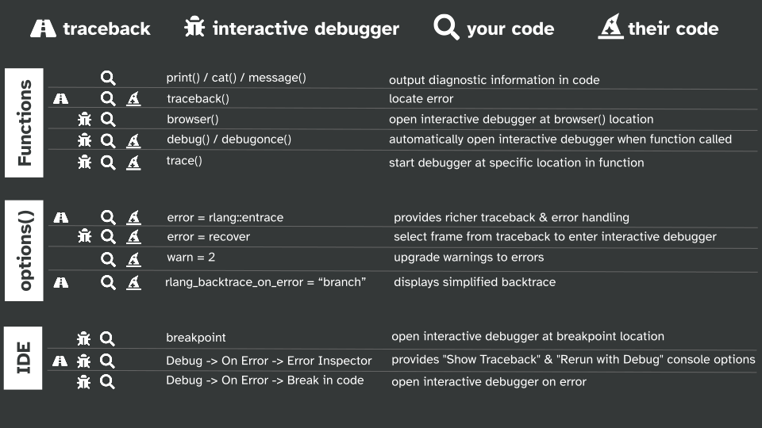
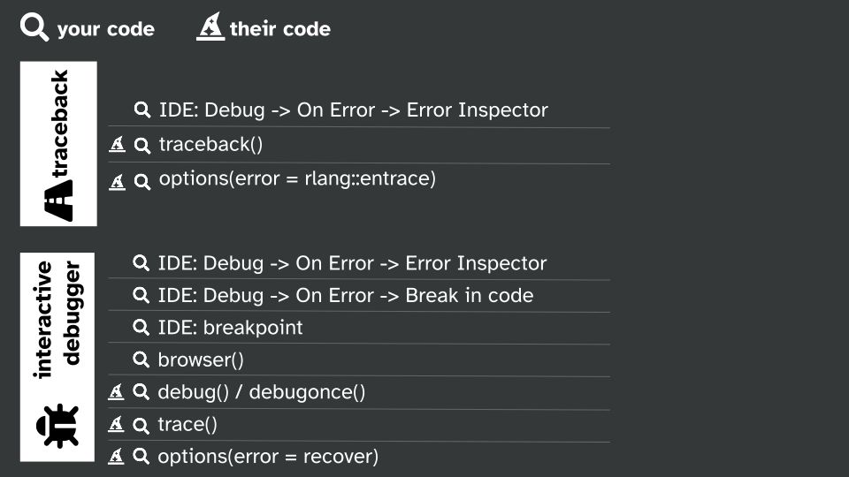

02:00
Debugging
Shannon Pileggi
Agenda
Getting started
Troubleshooting
Moving on
Debugging your code
Debugging in RStudio
Debugging their code
Special cases
Read the source
Getting started
Licensing
This work is licensed under a Creative Commons Attribution-ShareAlike 4.0 International License (CC BY-SA4.0).
Checklist
R installed? Pretty recent?
Recommended R ≥ 4.2.0
RStudio installed?
I’m on 2022.02.3+492
Ready to build packages?
devtools::has_devel()
Your system is ready to build packages!
Additional resources
WTF Ch 11 Debugging R code
https://rstats.wtf/debugging-r-code.htmlAdvanced R Ch 22 Debugging
https://adv-r.hadley.nz/debugging.htmlJenny Bryan 2020 RStudio Conf Keynote Object of type closure is not subsettable
https://github.com/jennybc/debugging#readmeAmanda Gadrow 2018 Webinar Debugging techniques in RStudio
https://www.rstudio.com/resources/webinars/debugging-techniques-in-rstudio/Jim Hester 2019 Introduction to debugging in R and RStudio
https://www.jimhester.com/talk/2019-crug-debugging/Maëlle Salmon 2021 How to become a better R code detective?
https://masalmon.eu/2021/07/13/code-detective/Kara Woo 2019 RStudio Conf Box plots A case study in debugging and perseverance https://www.rstudio.com/resources/rstudioconf-2019/box-plots-a-case-study-in-debugging-and-perseverance/
Troubleshooting
SEARCH
Teach Me How To Google, Samantha Csik (2022)
slides, recordingRESET
Restart R, especially when things get weird.REPREX
https://reprex.tidyverse.org/
make a reprex….. please, Sharla Gelfand (2021)
slides, recording
Reset - details
Have you tried turning it OFF and ON again?
Session -> Restart R or
Ctrl + Shift + F10 (Windows),
Cmd + Shift + 0 / Cmd + Shift + F10 (Mac)
Tools -> Global Options -> Workspace

Why reset?
Which persist after rm(list = ls())?
| Option | Persists? |
|---|---|
| A. library(dplyr) | |
| B. summary <- head | |
| C. options(stringsAsFactors = FALSE) | |
| D. Sys.setenv(LANGUAGE = “fr”) | |
| E. x <- 1:5 | |
| F. attach(iris) |
Why reset?
Which persist after rm(list = ls())?
| Option | Persists? |
|---|---|
| A. library(dplyr) | |
| B. summary <- head | |
| C. options(stringsAsFactors = FALSE) | |
| D. Sys.setenv(LANGUAGE = “fr”) | |
| E. x <- 1:5 | |
| F. attach(iris) |
Your turn, exercise 00
Either on your Posit cloud workspace or your personal computer…
Set your Workspace options as shown.
Tools -> Global Options -> Workspace
02:00
But what if

Moving on
from troubleshooting to…
formal debugging techniques.
Key concepts
traceback
location where did the error occur
interactive debugger
context why did the error occur
your code vs their code
Debugging tools
This is a lot.
These tools achieve similar objectives slightly differently.
People don’t generally use all of these tools at once. They pick and choose the ones they like.
Debugging your code
Debugging your code

Sourcing
⚠️ name your script with functions
⚠️ source your script with functions
for the best debugging experience üòé
Set up
traceback()
shows the sequence of calls that lead to the error.
the trace back is also known as:
call stack, stack trace, & back trace
Richer traceback
options(error = rlang::entrace)
could go in your .Rprofile
traceback vs rlang functions
Numbering and ordering differs between traceback() and rlang functions.

browser()
browser() opens the interactive debugger.
Modify the function by inserting a
browser()statement.Source the function.
Execute the function.
Interactive debugger
Interactive debugger tips
Investigate objects
Control execution
ls(), ls.str(),
str(), print()
| command | operation |
|---|---|
n |
next statement |
c |
continue (leave interactive debugging) |
s |
step into function call |
f |
finish loop / function |
where |
show previous calls |
Q |
quit debugger |
Debugging your code
Your turn, exercise 01
Enter Posit cloud or work locally via usethis::use_course("rstats-wtf/wtf-debugging") (https://github.com/rstats-wtf/wtf-debugging)
Complete 01_exercise to practice debugging your own code.
Check out the README.md for some getting started tips!
01_debugging_spartan.R(directions to explore without suggested code)01_debugging_comfy.R(directions to explore with suggested code)01_debugging_solution.R(directions to explore with code solutions)
15:00
Debugging in RStudio
Debugging in the RStudio IDE

Editor breakpoints
red circle = breakpoint = browser()
(but you don’t have to change your code)
Set / re-set an editor breakpoint:
click to the left of the line number in the source file
press Shift+F9 with your cursor on the line
Editor breakpoints
red circle = breakpoint = browser()
(but you don’t have to change your code)
To activate, either
click IDE Source button, or
debugSource(“demo/my_functions.R”)
Debugging console
RStudio IDE cheatsheet
IDE on error
IDE message only
IDE error inspector
IDE break in code
Error inspector
# IDE Error Inspector not triggered
f <- function(x) x + 1
g <- function(x) f(x)
g("a")
# IDE Error Inspector not triggered
strsplit(factor("a,b"), ",")
# IDE Error Inspector not triggered
f <- function(x) strsplit(x, ",")
f(factor("a,b"))
# IDE Error Inspector yes triggered
g <- function(x) f(x)
g(factor("a,b"))
The error inspector is only invoked if your code is involved.
To have RStudio invoke the debugger on any error,
Tools -> Global Options -> General -> Advanced -> Debugging
uncheck Use debug error handler only when my code contains errors.
Debugging in the RStudio IDE
Your turn, exercise 02
Complete 02_exercise to practice debugging a slightly different version of your own code, using features from the RStudio IDE.
07:00
Debugging their code
Debugging their code

debug()
debug() = browser()/ breakpoint in first line of function
interactive debugger is initiated every time
g()is executed, untilundebug("g")depending on function internals, this can‚Ķ trap you in the debugger üò¨
debugonce()
debugonce() = browser()/ breakpoint in first line of function
one time only!
interactive debugger initiated a single time when
g()is executed
options(error = recover)
we already discussed
options(error = rlang::entrace)
for a richer traceback on error
ü§† options(error = recover)
displays an interactive prompt with frames
you select the frame to enter the debugger
recover example
trace() overview
trace(what = fun, tracer = browser)
is equivalent to
inserting
browser()in first line of functiondebug(fun)
you an also insert any code at any location in function
trace(what = fun, tracer = browser, at = 2)
insertsbrowser()at second step offun
untrace(fun) cancels the tracing
trace() without a specified step
trace(what = colSums, tracer = browser)
is equivalent to
inserting
browser()in first line ofcolSums
if we had the source codedebug(colSums)
navigating function steps
investigate üßê the function with as.list() + body()
identify function step
trace() at specified step
Debugging their code
Your turn, exercise 03
Complete 03_exercise to practice debugging others’ code.
10:00
Special cases
Rmarkdown
Troubleshooting:
rmarkdown chunk option
error = TRUEenables knitting with errorsinsert
knitr::knit_exit()and interactively work through .Rmd
. . .
Debugging:
Adv R Ch 22.5.3 RMarkdown https://adv-r.hadley.nz/debugging.html#rmarkdown
WTF Ch 11.4 Debugging in Rmarkdown documents https://rstats.wtf/debugging-r-code.html#debugging-in-r-markdown-documents
Piped expressions
tracebacks can be verbose with pipes
gives trimmed tracebacks when using pipes
Matt Dray 2019 blog post Fix leaky pipes in R
Warnings
If you want to dig deeper into a warning, you can convert them to errors to initiate debugging tools.
?options
options(warn = 0) # default, stores warnings until top-level function returns
options(warn = 1) # warnings are printed as they occur
options(warn = 2) # upgrades warnings to errors
# initiate recover on warning
options(warn = 2, error = recover)
# restore original settings
options(warn = 0, error = NULL)Debugging special cases

Wrap up
Pick your favorite
Go forth,
and learn from your bugs!
traceback
interactive debugger
your code vs
their code